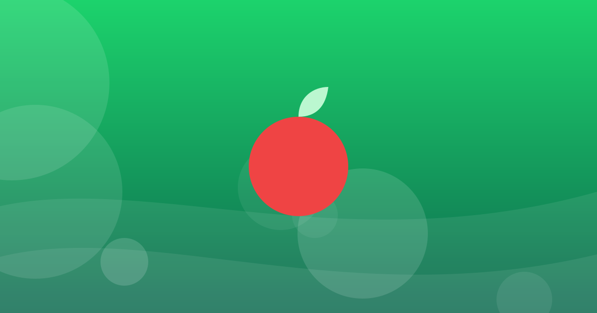
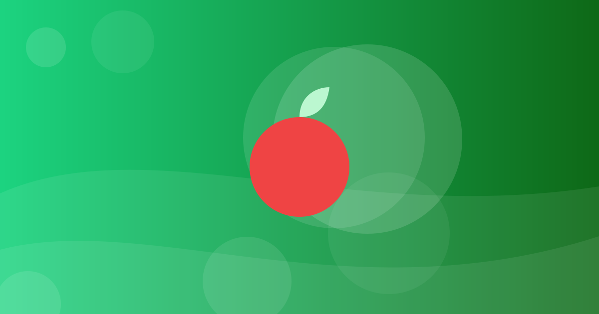

প্রতিদিন পর্যাপ্ত পানি পান করার গুরুত্ব
পানি শরীরের তাপমাত্রা নিয়ন্ত্রণ ও বর্জ্য অপসারণসহ নানা কাজে সাহায্য করে।
খসড়া — সম্পাদকীয় পর্যালোচনা প্রয়োজন
সুষম খাদ্য ও স্বাস্থ্যকর খাওয়ার অভ্যাস।

পানি শরীরের তাপমাত্রা নিয়ন্ত্রণ ও বর্জ্য অপসারণসহ নানা কাজে সাহায্য করে।
খসড়া — সম্পাদকীয় পর্যালোচনা প্রয়োজন

বিভিন্ন খাদ্যগোষ্ঠী থেকে পরিমিত খাবার খাওয়াই সুষম খাদ্য।
খসড়া — সম্পাদকীয় পর্যালোচনা প্রয়োজন

লেবেল দেখে চিনি, লবণ ও চর্বির পরিমাণ তুলনা করা যায়।
খসড়া — সম্পাদকীয় পর্যালোচনা প্রয়োজন